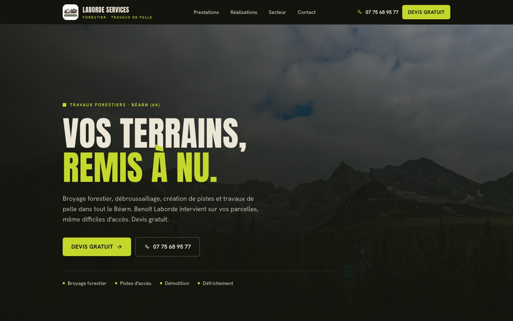

Jules Deschamps · studio web à Angoulême
Dix sites en ligne.
En voici trois.

Dauffy PaysagePaysagiste, Issé (44)

Laborde ServicesTravaux forestiers, Béarn (64)

Estelle FonderPsychologue, Albi (81)
Chaque site est dessiné pour une entreprise, et une seule. Pas de thème racheté, pas de gabarit revendu deux fois.